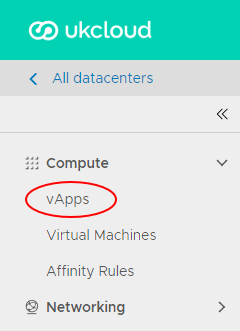
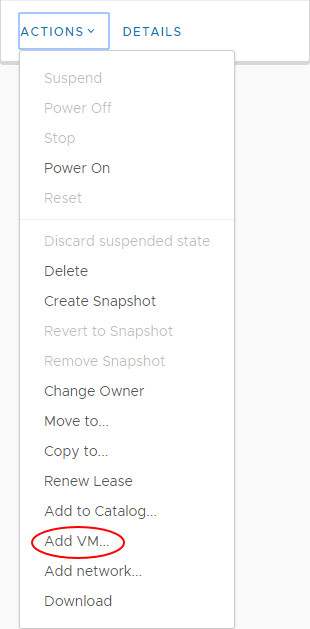
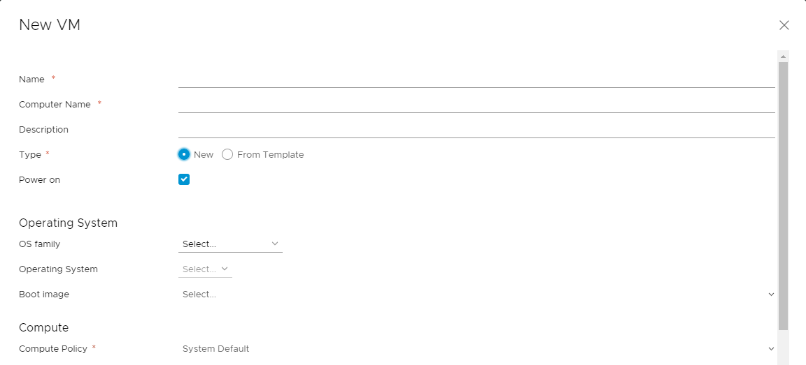
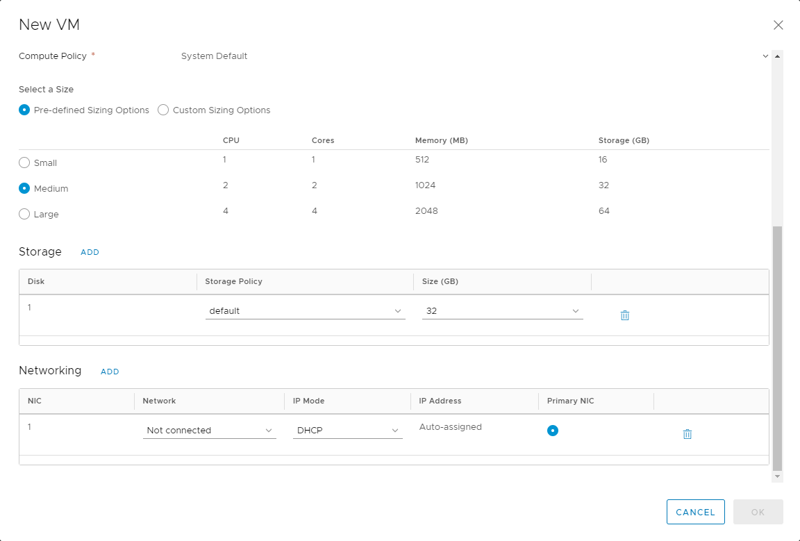
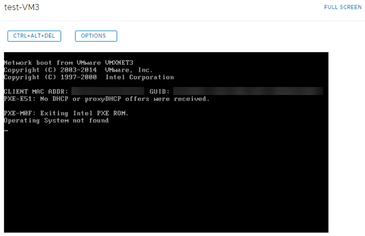
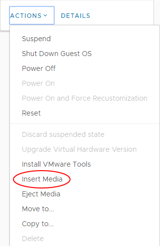
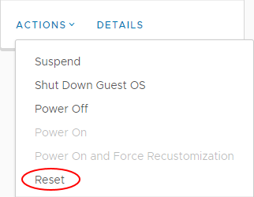

How to create a VM from scratch
Overview
As well as deploying pre-built VMs from a catalog, you can build your own VMs from scratch, as you would do on a physical machine, using an ISO image in place of a physical CD or DVD.
For information about creating a VM from a template, see How to create a VM from a template.
Creating an empty VM
In the vCloud Director Virtual Datacenters dashboard, select the VDC that contains the vApp in which you want to create the VM.
In the left navigation panel, select vApps to view a list of vApps within the VDC.

In the card for the vApp in which you want to create the VM, select Actions then Add VM.

Tip
To create a new vApp, see How to create a vApp.
To create a standalone VM, in the left navigation panel, select Virtual Machines, then click New VM.
In the Add VMs dialog box, click Add Virtual Machine.

In the New VM dialog box, from the Type radio buttons, select New.
Enter a Name, Computer Name and Description for your VM.
Note
Name is a name to identify the VM, Computer Name is the host name of the VM.
The Computer Name is copied from the Name field but can contain only alphanumeric characters and hyphens so you may need to edit it if your VM Name contains spaces or special characters.
Select the OS Family to use for your VM, then from the Operating System list, select the specific OS that you want to use.

Select a Size for your VM based on the number of vCPUs and cores you require.
You can select from Pre-defined Sizing Options or select Custom Sizing Options to enter specific compute, memory and storage settings.
Tip
Although you can build a VM to your own specification in terms of the number of vCPUs, and amount of memory and disk space, you'll be billed based on the closest (next highest) match to a UKCloud pre-defined VM size.
Given the flexibility of VMs, and the ability to change the number of vCPUs and amount of memory and disk space on the fly, it's often better to start small as you're not tied by the constraints of a physical server. Remember too that more vCPUs or RAM won't necessarily make a server faster, and could cost a lot more. You need to understand how well your application can make use of multi-threading.
For Windows, select at least two vCPUs if you think you'll need two or more in the future, as the multi-processor HAL will be loaded as part of the OS build.
If you want to run virtualisation servers as a VM, you can edit the properties of the VM after it has been deployed and, in the Hardware section, select the Expose hardware-assisted CPU virtualization to guest OS check box.
For example, you can run a Windows 2008 or 2012 server with Hyper‑V, or a VMware ESX host.
In the Storage section, set the Storage Policy and Size (in GB) of storage for the VM. You can also add more disks.
In the Network section, specify which Network to connect the VM to and select an IP Mode to determine how IP addresses are assigned:
DHCP vCloud Director interacts with the OS via VMware Tools to use DHCP rather than static IPs. You'll need to define a DHCP server on your edge gateway. Check with UKCloud or your organisation administrator that this is set up before you use it.11. how many network interface controllers (NICs) you need in the first instance.
IP Pool is the usual method, which injects an IP address into the VM via VMware Tools from a list of available IP addresses. The address may vary with each boot, but there is a check box to keep IP address assignments elsewhere within the UI once the VMs are created.
Manual IP is similar to IP Pool, but you need to enter a valid IP Address from the pool, which the VM will then keep.

Tip
You can the VM to multiple networks, by clicking Add.
When you're done, click OK.
Important
By default, the Power on check box is selected. If you do not want the VM to power on and start incurring charges immediately, make sure to deselect this check box.
Back in the Add VMs dialog box, you can add more VMs or click Add when you're done.
You can monitor progress in the Add VMs dialog box, or click Cancel to return to the list of vApps while the VM is created in the background.
The VM will be deployed without any operating system.
Installing an operating system into the VM
On the card for the vApp that contains the VM, click Power then select Power On.
This starts the vApp and all the VMs within it. The vApp shows a status of Powering on, then Running.
In the left navigation panel, select Virtual Machines to view a list of VMs within the VDC.
In the card for your VM, click the picture of the monitor to launch the VM console.

As with a physical server, no virtual CD or DVD is available at first boot, so the server will attempt to PXE boot.

In the main vCloud Director interface (not the console), in the card for the VM you want to work with, select Actions then Insert Media.

Select the ISO image you want to mount from a catalog, then click Insert.
In the card for the VM, select Actions then Reset to reset the VM so that it picks up the virtual CD/DVD.

After a short while the VM will start the boot process and pick up the CD/DVD. Resize the VM console if necessary or go to full screen.

Carry out the operating system install as normal. When you've finished, remember to install VMware Tools.
For more information, see VMware Tools Installation.
Feedback
If you find a problem with this article, click Improve this Doc to make the change yourself or raise an issue in GitHub. If you have an idea for how we could improve any of our services, send an email to feedback@ukcloud.com.